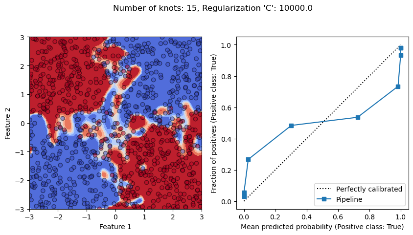
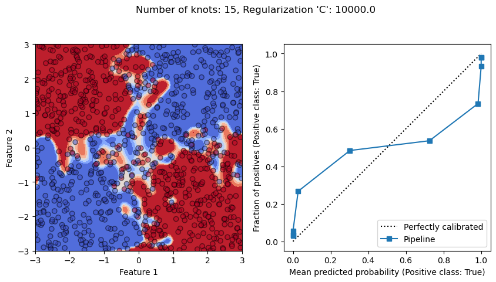
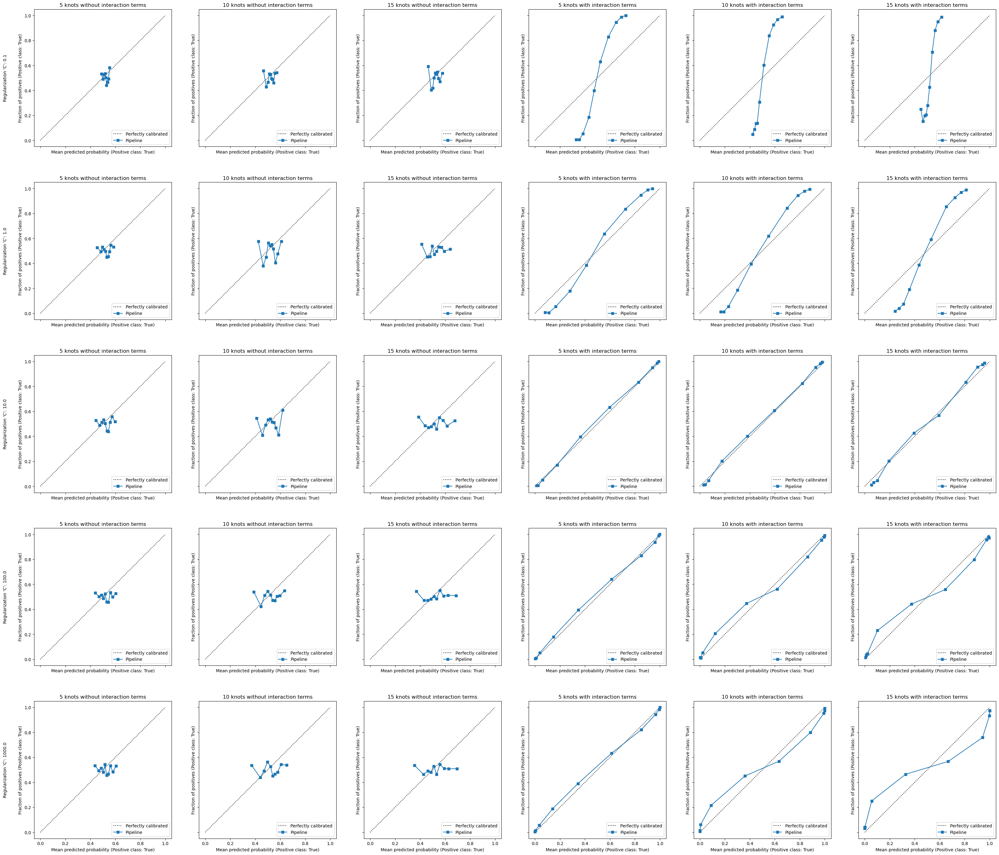
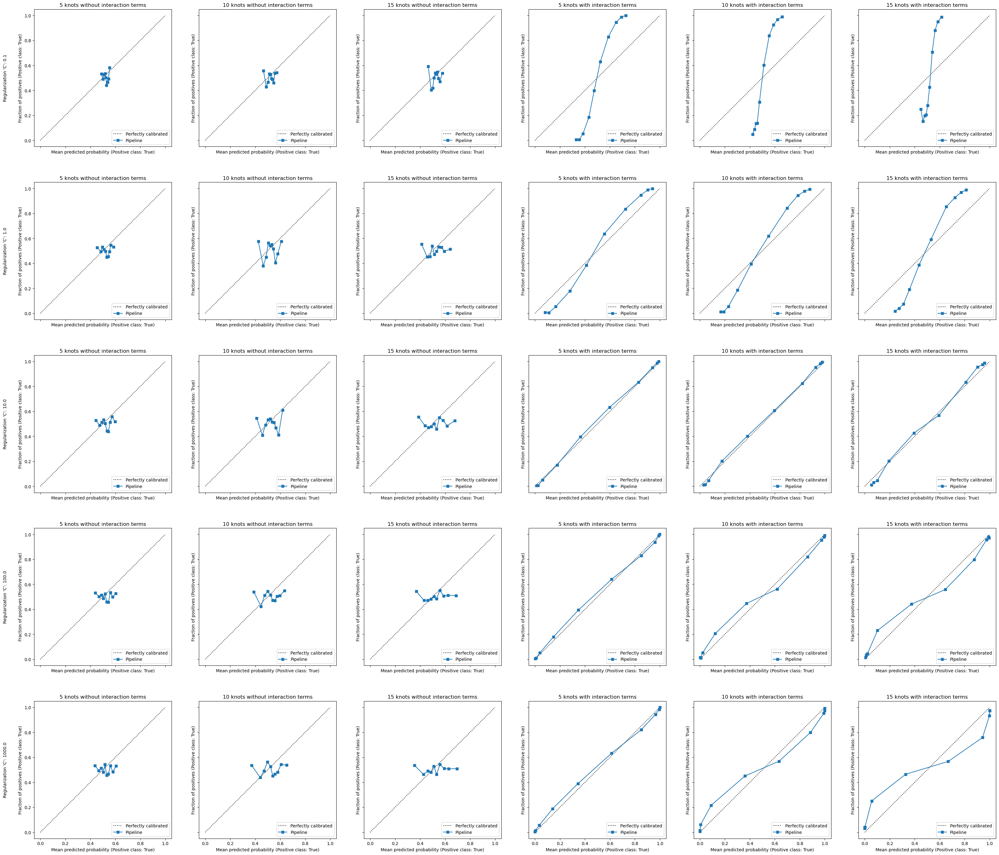
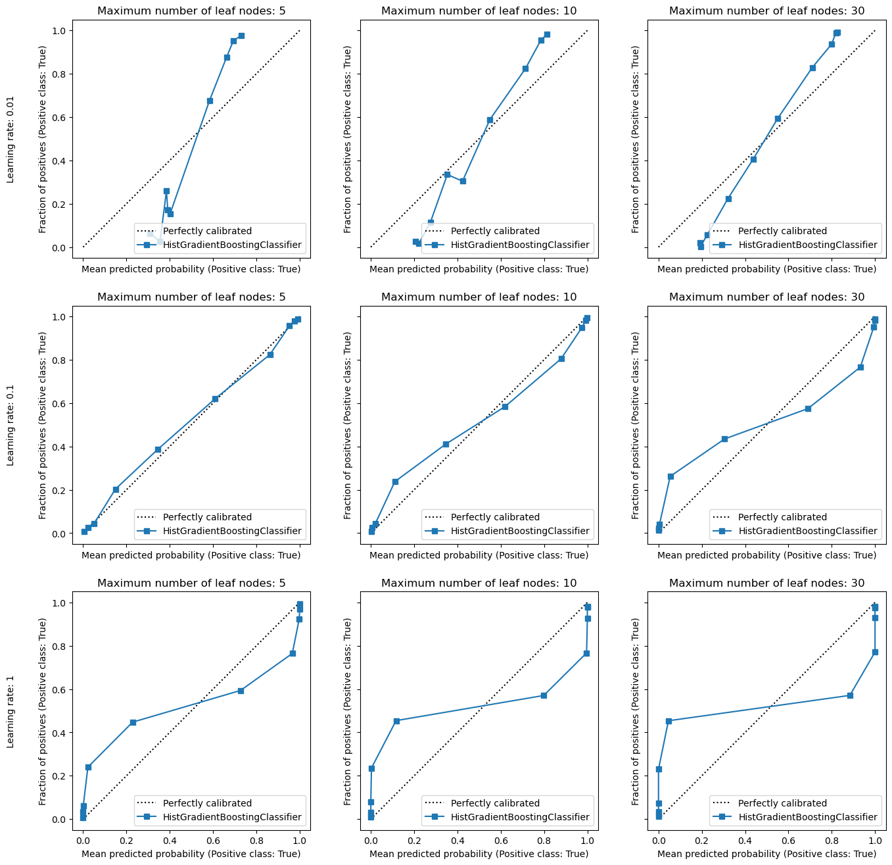
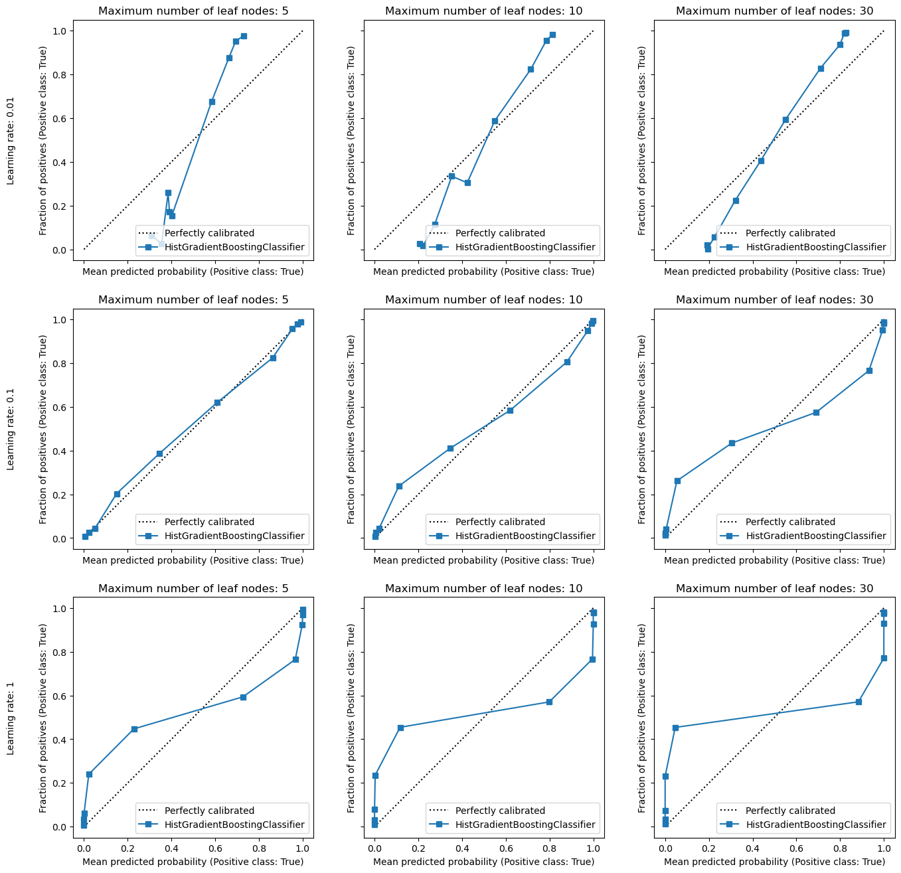

Miscalibration due to inappropriate model hyperparameters#
Models complexity are controlled via their hyperparameters. Depending on their values, we can have models that are under-fitting or over-fitting. In this notebook, we investigate the relationship between models hyperparameters, model complexity, and their calibration.
Let’s start by defining our classification problem: we use the so-called XOR problem.
The function xor_generator generates a dataset with two features and the target
variable following the XOR logic. We add some noise to the generative process.
# Make sure to have scikit-learn >= 1.5
import sklearn
sklearn.__version__
'1.5.1'
import numpy as np
def xor_generator(n_samples=1_000, seed=None):
rng = np.random.default_rng(seed)
X = rng.uniform(low=-3, high=3, size=(n_samples, 2))
unobserved = rng.normal(loc=0, scale=0.5, size=(n_samples, 2))
y = np.logical_xor(X[:, 0] + unobserved[:, 0] > 0, X[:, 1] + unobserved[:, 1] > 0)
return X, y
We can now generate a dataset and visualize it.
import matplotlib.pyplot as plt
X_train, y_train = xor_generator(seed=0)
_, ax = plt.subplots()
ax.scatter(*X_train.T, c=y_train, cmap="coolwarm", edgecolors="black", alpha=0.5)
_ = ax.set(
xlim=(-3, 3),
ylim=(-3, 3),
xlabel="Feature 1",
ylabel="Feature 2",
title="XOR problem",
aspect="equal",
)
The XOR problem exhibits a non-linear decision link between the features and the the target variable. Therefore, a linear model is not be able to separate the classes correctly. Let’s confirm this intuition by fitting a logistic regression model to such dataset.
from sklearn.linear_model import LogisticRegression
model = LogisticRegression()
model.fit(X_train, y_train)
LogisticRegression()In a Jupyter environment, please rerun this cell to show the HTML representation or trust the notebook.
On GitHub, the HTML representation is unable to render, please try loading this page with nbviewer.org.
LogisticRegression()
To check the decision boundary of the model, we use an independent test set.
from sklearn.inspection import DecisionBoundaryDisplay
X_test, y_test = xor_generator(n_samples=10_000, seed=1)
fig, ax = plt.subplots()
params = {
"cmap": "coolwarm",
"response_method": "predict_proba",
"plot_method": "contourf",
# make sure to have a range of 0 to 1 for the probability
"vmin": 0,
"vmax": 1,
}
disp = DecisionBoundaryDisplay.from_estimator(model, X_test, ax=ax, **params)
ax.scatter(*X_train.T, c=y_train, cmap=params["cmap"], edgecolors="black", alpha=0.5)
fig.colorbar(disp.surface_, ax=ax, label="Probability estimate")
_ = ax.set(
xlim=(-3, 3),
ylim=(-3, 3),
xlabel="Feature 1",
ylabel="Feature 2",
title="Soft decision boundary of a logistic regression",
aspect="equal",
)
We see that the probability estimates is almost constant and the model is really uncertain with an estimated probability of 0.5 for all samples in the test set.
We therefore need a more expressive model to capture the non-linear relationship between the features and the target variable. Crafting a pre-processing step to transform the features into a higher-dimensional space could help. We create a pipeline that includes a spline transformation and a polynomial transformation before to train our logistic regression model.
from sklearn.preprocessing import SplineTransformer, PolynomialFeatures
from sklearn.linear_model import LogisticRegression
from sklearn.pipeline import make_pipeline
model = make_pipeline(
SplineTransformer(),
# Only add interaction terms to avoid blowing up the number of features
PolynomialFeatures(interaction_only=True),
# Increase the number of iterations to ensure convergence
LogisticRegression(max_iter=10_000),
)
model.fit(X_train, y_train)
Pipeline(steps=[('splinetransformer', SplineTransformer()),
('polynomialfeatures',
PolynomialFeatures(interaction_only=True)),
('logisticregression', LogisticRegression(max_iter=10000))])In a Jupyter environment, please rerun this cell to show the HTML representation or trust the notebook. On GitHub, the HTML representation is unable to render, please try loading this page with nbviewer.org.
Pipeline(steps=[('splinetransformer', SplineTransformer()),
('polynomialfeatures',
PolynomialFeatures(interaction_only=True)),
('logisticregression', LogisticRegression(max_iter=10000))])SplineTransformer()
PolynomialFeatures(interaction_only=True)
LogisticRegression(max_iter=10000)
Let’s check the decision boundary of the model on the test set.
fig, ax = plt.subplots()
disp = DecisionBoundaryDisplay.from_estimator(model, X_test, ax=ax, **params)
ax.scatter(*X_train.T, c=y_train, cmap=params["cmap"], edgecolors="black", alpha=0.5)
fig.colorbar(disp.surface_, ax=ax, label="Probability estimate")
_ = ax.set(
xlim=(-3, 3),
ylim=(-3, 3),
xlabel="Feature 1",
ylabel="Feature 2",
title="Soft decision boundary of a logistic regression\n with pre-processing",
aspect="equal",
)
We see that our model is capable of capturing the non-linear relationship between the features and the target variable. The probability estimates are now varying across the samples. We could check the calibration of our model using the calibration curve.
from sklearn.calibration import CalibrationDisplay
disp = CalibrationDisplay.from_estimator(
model,
X_test,
y_test,
strategy="quantile",
n_bins=10,
)
_ = disp.ax_.set(aspect="equal")
We observe that the calibration of the model is not perfect. So is there a way to improve the calibration of our model?
As an exercise, let’s try to three different hyperparameters configurations:
one configuration with 5 knots (i.e.
n_knots) for the spline transformation and a regularization parameterCof 1e-4 for the logistic regression,one configuration with 7 knots for the spline transformation and a regularization parameter
Cof 1e1 for the logistic regression,one configuration with 15 knots for the spline transformation and a regularization parameter
Cof 1e4 for the logistic regression.
For each configuration, plot the decision boundary and the calibration curve. What can you observe in terms of under-/over-fitting and calibration?
param_configs = [
{"splinetransformer__n_knots": 5, "logisticregression__C": 1e-4},
{"splinetransformer__n_knots": 7, "logisticregression__C": 1e1},
{"splinetransformer__n_knots": 15, "logisticregression__C": 1e4},
]
for model_params in param_configs:
model.set_params(**model_params)
model.fit(X_train, y_train)
fig, ax = plt.subplots(nrows=1, ncols=2, figsize=(10, 5))
disp = DecisionBoundaryDisplay.from_estimator(model, X_test, ax=ax[0], **params)
ax[0].scatter(
*X_train.T, c=y_train, cmap=params["cmap"], edgecolors="black", alpha=0.5
)
ax[0].set(
xlim=(-3, 3),
ylim=(-3, 3),
xlabel="Feature 1",
ylabel="Feature 2",
aspect="equal",
)
CalibrationDisplay.from_estimator(
model,
X_test,
y_test,
strategy="quantile",
n_bins=10,
ax=ax[1],
)
ax[1].set(aspect="equal")
fig.suptitle(
f"Number of knots: {model_params['splinetransformer__n_knots']}, "
f"Regularization 'C': {model_params['logisticregression__C']}"
)
 

From the previous exercise, we observe that whether we have an under-fitting or
over-fitting model impact its calibration. With a high regularization (i.e. C=1e-4),
we see that the model undefits since it does not discriminate between the two classes.
It translates into obtaining a vertical calibration curve meaning that our model
predicts the same probability for all fraction of positive samples.
On the other hand, if we have a low regularization (i.e. C=1e4), and allows the
the model to be flexible by having a large number of knots, we see that the model
overfits since it is able to isolate noisy samples in the feature space. It translates
into a calibration curve where we observe that our model is over-confident.
Finally, there is a sweet spot where the model does not underfit nor overfit. In this case, we also get a calibrated model.
We can push the analysis further by looking at a wider range of hyperparameters:
the impact of
n_knotsof theSplineTransformer,whether or not to compute interaction terms using a
PolynomialFeatures,the impact of the parameter
Cof theLogisticRegression.
We can plot the full grid of hyperparameters to see the effect on the decision boundary and the calibration curve.
from sklearn.model_selection import ParameterGrid
param_grid = list(
ParameterGrid(
{
"logisticregression__C": np.logspace(-1, 3, 5),
"splinetransformer__n_knots": [5, 10, 15],
"polynomialfeatures": [None, PolynomialFeatures(interaction_only=True)],
}
)
)
fig_params = {
"nrows": 5,
"ncols": 6,
"figsize": (40, 35),
"sharex": True,
"sharey": True,
}
boundary_figure, boundary_axes = plt.subplots(**fig_params)
calibration_figure, calibration_axes = plt.subplots(**fig_params)
for idx, (model_params, ax_boundary, ax_calibration) in enumerate(
zip(param_grid, boundary_axes.ravel(), calibration_axes.ravel())
):
model.set_params(**model_params).fit(X_train, y_train)
# Create a title
title = f"{model_params['splinetransformer__n_knots']} knots"
title += " with " if model_params["polynomialfeatures"] else " without "
title += "interaction terms"
# Display the results
disp = DecisionBoundaryDisplay.from_estimator(
model, X_test, ax=ax_boundary, **params
)
ax_boundary.scatter(
*X_train.T, c=y_train, cmap=params["cmap"], edgecolor="black", alpha=0.5
)
ax_boundary.set(
xlim=(-3, 3),
ylim=(-3, 3),
aspect="equal",
title=title,
)
CalibrationDisplay.from_estimator(
model,
X_test,
y_test,
strategy="quantile",
n_bins=10,
ax=ax_calibration,
)
ax_calibration.set(aspect="equal", title=title)
if idx % fig_params["ncols"] == 0:
for ax in (ax_boundary, ax_calibration):
ylabel = f"Regularization 'C': {model_params['logisticregression__C']}"
ylabel += f"\n\n\n{ax.get_ylabel()}" if ax.get_ylabel() else ""
ax.set(ylabel=ylabel)
 

An obvious observation is that without explicitly creating the interaction terms, our model is mis-specified and the model cannot capture the non-linear relationship, whatever the other hyperparameters values.
A larger number of knots in the spline transformation increases the flexibility of the
decision boundary since it can vary at more locations into the feature space.
Therefore, if we use a too large number of knots, then the model is able isolate noisy
samples in this feature space, depending of the subsequent regularization parameter
C.
Indeed, the parameter C controls the loss function that is minimized during the
training: a small value of C enforces to minimize the norm of the model coefficients
and thus discard, more or less, the training error (i.e. the mean squared error). A
large value of C enforces to prioritize minimizing the training error without
constraining, more or less, the norm of the coefficients.
Understanding the previous principles, it allows us to understand that we have an
interaction between the number of knots and the regularization parameter C. Since a
model with a larger number of knots is more flexible and thus more prone to
overfitting, the value of the parameter C should be smaller (i.e. more
regularization) than a model with a smaller number of knots.
For instance, setting C=100 with n_knots=5 leads to a model with a similar
calibration curve as setting C=10 with n_knots=15.
Is it true for other models?#
In this section, we want to show that the previous findings are not specific to the a linear model that relies on a pre-processing step. Here, we use a gradient-boosting model that naturally captures non-linear relationships of the XOR problem.
We check that the calibration of the model by changing the hyperparameters
max_leaf_nodes and learning_rate that are known to impact the model complexity.
from sklearn.ensemble import HistGradientBoostingClassifier
model = HistGradientBoostingClassifier()
param_grid = list(
ParameterGrid({"max_leaf_nodes": [5, 10, 30], "learning_rate": [0.01, 0.1, 1]})
)
fig_params = {
"nrows": 3,
"ncols": 3,
"figsize": (16, 16),
"sharex": True,
"sharey": True,
}
boundary_figure, boundary_axes = plt.subplots(**fig_params)
calibration_figure, calibration_axes = plt.subplots(**fig_params)
for idx, (model_params, ax_boundary, ax_calibration) in enumerate(
zip(param_grid, boundary_axes.ravel(), calibration_axes.ravel())
):
model.set_params(**model_params).fit(X_train, y_train)
# Create a title
title = f"Maximum number of leaf nodes: {model_params['max_leaf_nodes']}"
# Display the results
disp = DecisionBoundaryDisplay.from_estimator(
model, X_test, ax=ax_boundary, **params
)
ax_boundary.scatter(
*X_train.T, c=y_train, cmap=params["cmap"], edgecolor="black", alpha=0.5
)
ax_boundary.set(
xlim=(-3, 3),
ylim=(-3, 3),
aspect="equal",
title=title,
)
CalibrationDisplay.from_estimator(
model,
X_test,
y_test,
strategy="quantile",
n_bins=10,
ax=ax_calibration,
)
ax_calibration.set(aspect="equal", title=title)
if idx % fig_params["ncols"] == 0:
for ax in (ax_boundary, ax_calibration):
ylabel = f"Learning rate: {model_params['learning_rate']}"
ylabel += f"\n\n\n{ax.get_ylabel()}" if ax.get_ylabel() else ""
ax.set(ylabel=ylabel)
 

From the boundary decision plots, we observe that the model, whatever the
hyperparameters, is capable of capturing the link between the features and the target.
However, if we look at the probability estimates, we still observe the same effect of
under-fitting and over-fitting as for the logistic regression model. It also means
that tuning the parameter max_leaf_nodes on this specific dataset is not worth it
since for a single decision tree, the perfect decision boundary is achieved with
4 leaf nodes.
However, the learning rate is the parameter that controls the model to under-fit or over-fit. A too low learning rate leads to an under-fitting model and the model is under-confident with probability estimates that are too low. On the other hand, a too high learning rate leads to an over-fitting model and the model is over-confident with probability estimates that are too high.
Hyperparameter tuning while considering calibration#
From the previous sections, we saw that the hyperparameters of a model while impacting
its complexity also impact its calibration. It therefore becomes crucial to tune the
hyperparameters of a model while considering if its calibration. While scikit-learn
offers tools to tune hyperparameters such as GridSearchCV or RandomizedSearchCV,
there is a caveat: the default metric used to select the best model is not necessarily
the one leading to a well-calibrated model.
To illustrate this point, we use the previous logistic regression model with the
preprocessing step. From the previous experiment, we draw the conclusion that we
need to have some regularization to avoid overfitting induced by the number of knots.
Therefore, we plot the validate curve for different values of the regularization
parameter C. In addition, since we want to see the impact of the metric used to
tuned the hyperparameters, we plot different validation curves for different metrics:
the negative log-likelihood that is a proper scoring rule,
the ROC AUC that is a ranking metric,
the accuracy that is a thresholded metric.
from pathlib import Path
from mpl_toolkits.axes_grid1.axes_divider import make_axes_locatable
from sklearn.model_selection import ShuffleSplit, validation_curve
model = make_pipeline(
SplineTransformer(n_knots=15),
PolynomialFeatures(interaction_only=True),
LogisticRegression(max_iter=10_000),
)
# Since the computation of the validation curve is expensive, we stored the results
# and commit them in the repository. If the folder containing the results does not
# exist, we compute the validation curve and store the results.
n_splits, param_range = 100, np.logspace(-2, 4, 30)
test_scores = {}
for metric_name in ["neg_log_loss", "roc_auc", "accuracy"]:
results_file_path = Path(f"../results/validation_curve_{metric_name}.npz")
if not results_file_path.is_file():
_, test_scores_metric = validation_curve(
model,
X_train,
y_train,
param_name="logisticregression__C",
param_range=param_range,
scoring=metric_name,
cv=ShuffleSplit(n_splits=n_splits, test_size=0.2, random_state=0),
n_jobs=-1,
)
parent_folder = results_file_path.parent
if not parent_folder.is_dir():
parent_folder.mkdir(parents=True)
np.savez(results_file_path, test_scores=test_scores_metric)
test_scores[metric_name] = test_scores_metric
else:
with np.load(results_file_path) as data:
test_scores[metric_name] = data["test_scores"]
fig, axes = plt.subplots(ncols=3, figsize=(15, 5))
full_metric_name = {
"neg_log_loss": "negative log loss",
"roc_auc": "ROC AUC",
"accuracy": "accuracy",
}
for idx, (metric_name, ax) in enumerate(
zip(["neg_log_loss", "roc_auc", "accuracy"], axes)
):
rng = np.random.default_rng(0)
bootstrap_size = 5
ax_hist = make_axes_locatable(ax).append_axes("top", size="20%", pad=0.1, sharex=ax)
all_best_param_values = []
for _ in range(200):
selected_fold_idx = rng.choice(n_splits, size=bootstrap_size, replace=False)
mean_test_score = test_scores[metric_name][:, selected_fold_idx].mean(axis=1)
ax.plot(
param_range,
mean_test_score,
color="tab:blue",
linewidth=0.1,
zorder=-1,
)
best_param_idx = mean_test_score.argmax()
best_param_value = param_range[best_param_idx]
best_test_score = mean_test_score[best_param_idx]
ax.vlines(
best_param_value,
ymin=test_scores[metric_name].min(),
ymax=best_test_score,
linewidth=0.3,
color="tab:orange",
)
all_best_param_values.append(best_param_value)
ax.set(
xlabel="Regularization C",
ylabel=full_metric_name[metric_name],
xscale="log",
)
bins = (param_range[:-1] + param_range[1:]) / 2
ax_hist.hist(
all_best_param_values, bins=bins, color="tab:orange", edgecolor="black"
)
ax_hist.xaxis.set_tick_params(labelleft=False, labelbottom=False)
ax_hist.yaxis.set_tick_params(labelleft=False, labelbottom=False)
_ = fig.suptitle("Stability of parameter tuning based on different metrics")
From the previous plots, there are three important observations.
First, the proper scoring rule (i.e. the negative log-likelihood) depicts a more distinct bump in comparison to the ranking metric (i.e. the ROC AUC) and the thresholded metric (i.e. the accuracy). The bump is still present for the ROC AUC but it is less pronounced. The accuracy does not show any bump.
Then, the proper scoring rule is the only one showing a significant decrease when the regularization is too low. The intuition is that the model becomes over-confident and thus not well-calibrated while the hard predictions are not be impacted.
Lastly, the proper scoring rule is the metric showing the least variance across the different splits near of the optimal value. It therefore makes it a more robust metric to select the best model.
We therefore recommend to always use a proper scoring rule when tuning the
hyperparemeters. Below, we show the methodology to pursue when using a proper scoring
together with a RandomizedSearchCV. We therefore needs to set specifically
scoring to neg_log_loss in the RandomizedSearchCV.
from scipy.stats import loguniform
from sklearn.model_selection import RandomizedSearchCV
param_distributions = {
"splinetransformer__n_knots": [5, 10, 15],
"logisticregression__C": loguniform(1e-6, 1e6),
}
tuned_model = RandomizedSearchCV(
model,
param_distributions=param_distributions,
n_iter=25,
scoring="neg_log_loss",
cv=ShuffleSplit(n_splits=10, test_size=0.2, random_state=0),
random_state=0,
)
tuned_model.fit(X_train, y_train)
RandomizedSearchCV(cv=ShuffleSplit(n_splits=10, random_state=0, test_size=0.2, train_size=None),
estimator=Pipeline(steps=[('splinetransformer',
SplineTransformer(n_knots=15)),
('polynomialfeatures',
PolynomialFeatures(interaction_only=True)),
('logisticregression',
LogisticRegression(max_iter=10000))]),
n_iter=25,
param_distributions={'logisticregression__C': <scipy.stats._distn_infrastructure.rv_continuous_frozen object at 0x7f9871b196a0>,
'splinetransformer__n_knots': [5, 10,
15]},
random_state=0, scoring='neg_log_loss')In a Jupyter environment, please rerun this cell to show the HTML representation or trust the notebook. On GitHub, the HTML representation is unable to render, please try loading this page with nbviewer.org.
RandomizedSearchCV(cv=ShuffleSplit(n_splits=10, random_state=0, test_size=0.2, train_size=None),
estimator=Pipeline(steps=[('splinetransformer',
SplineTransformer(n_knots=15)),
('polynomialfeatures',
PolynomialFeatures(interaction_only=True)),
('logisticregression',
LogisticRegression(max_iter=10000))]),
n_iter=25,
param_distributions={'logisticregression__C': <scipy.stats._distn_infrastructure.rv_continuous_frozen object at 0x7f9871b196a0>,
'splinetransformer__n_knots': [5, 10,
15]},
random_state=0, scoring='neg_log_loss')Pipeline(steps=[('splinetransformer', SplineTransformer()),
('polynomialfeatures',
PolynomialFeatures(interaction_only=True)),
('logisticregression',
LogisticRegression(C=np.float64(22.13852451266167),
max_iter=10000))])SplineTransformer()
PolynomialFeatures(interaction_only=True)
LogisticRegression(C=np.float64(22.13852451266167), max_iter=10000)
Now that we train the model, we check if it is well-calibrated on the left-out test set.
fig, ax = plt.subplots(nrows=1, ncols=2, figsize=(10, 5))
disp = DecisionBoundaryDisplay.from_estimator(tuned_model, X_test, ax=ax[0], **params)
ax[0].scatter(*X_train.T, c=y_train, cmap=params["cmap"], edgecolors="black", alpha=0.5)
_ = ax[0].set(
xlim=(-3, 3),
ylim=(-3, 3),
xlabel="Feature 1",
ylabel="Feature 2",
aspect="equal",
)
CalibrationDisplay.from_estimator(
tuned_model,
X_test,
y_test,
strategy="quantile",
n_bins=10,
ax=ax[1],
name="Tuned logistic regression",
)
_ = ax[1].set(aspect="equal")
_ = fig.suptitle(
f"Number of knots: {tuned_model.best_params_['splinetransformer__n_knots']}, "
f"Regularization 'C': {tuned_model.best_params_['logisticregression__C']}"
)
We see that our hyperparameter tuning procedure leadsx§ to a well-calibrated model since we used a proper scoring rule.